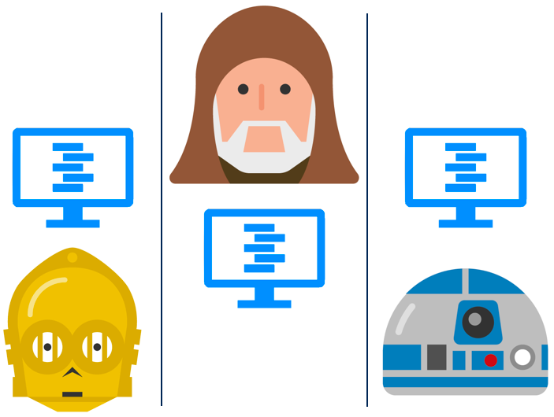
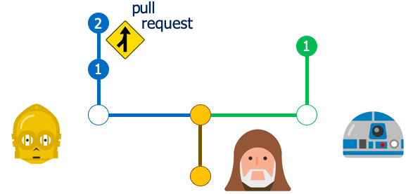
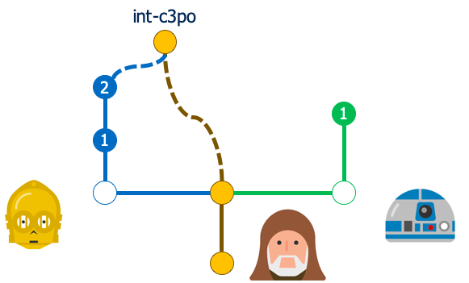
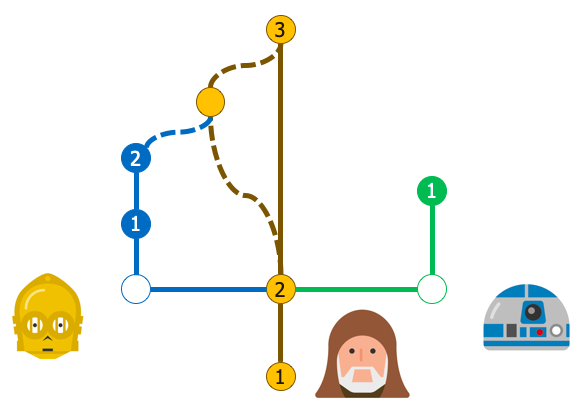
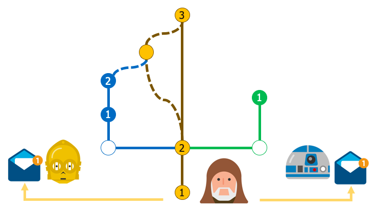
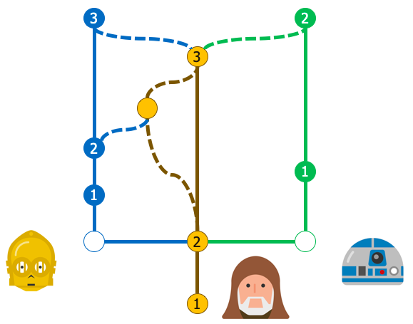

Team Workflow
This section aims to provide a general idea of how Git can be useful to team-based software development.
Let's see how this works through a scenario!
Note the arrow(s) in the bottom-right corner that controls navigation through the lesson. You may also navigate by pressing ESC and using the arrow keys.
First, let's understand the characters at play.
Team Lead
Teams are typically led by a team lead. Here's ours!
Teams also have developers.
Developer 1
Team Lead
Developer 2
Developers all work on their own computers...
...and typically, this development is occurs in parallel, with each developer working independently.

They will need an effective means for synchronizing their updates though.
This is where Git comes in!
First, the team lead creates a repository on their organization's server.
(This is denoted by the yellow circle here)
Next, the team lead may make an initial commit.
Commits are shown here as nodes or circles, though really they are stored as hashes.
Don't worry about those technical details for now though. Let's just focus on team workflow.
Now, each developer should create their own development branches.
This allows them to develop independently without interfering with each other.
For this scenario, the team lead is not a developer but acts as the integration lead.
(You'll see what that means shortly)
The team lead may task each developer differently.
In their own time, each developer makes updates on their development branches.
At this point, C3PO has successfully tested his code and is ready to merge it into master for the rest
of the team.
R2D2 has committed some code, but he has either not yet tested it or is not ready to push it to the
rest of the team, as he may want to make some other updates later.
After testing his code, C3PO files a pull request to notify the integration lead.

The purpose of a pull request is to help prevent buggy or undesirable code from being pushed into a
working branch. It’s also just helpful to facilitate communication amongst a team to prevent bad updates
from getting into the repository.
It is very important that the master branch always exists in a good, clean, valid state.
It assists in incremental delivery to customers, provides a solid baseline for any newcomers, and acts
as a great reference for the entire repository.
Not all repositories use pull requests. Branches, such as the master branch,
can be locked to prevent uncoordinated changes, but no branches are locked by default.
Some repositories are configured without locks on any branches. In this case, it is highly recommended
that the developer communicate with the team lead prior to bringing in any code from his development
branch to the master or any other branch.
Regardless of how the communication occurs, the team lead will likely want to test the code out
him/herself prior to bring it into the master branch.
The integration lead creates a branch to merge and test the developer's updates.

It is good practice to create a branch off the HEAD of the mainline branch for integration testing.
(The HEAD of any branch is essentially the most-recent commit in the history of the
branch. You may have heard of or seen references to a ’detached head’ state. Being in a
‘detached head’ state within Git simply means that you are NOT at the tip of your branch.)
If testing fails or merging conflicts raise additional questions, the team lead may contact the
developer with questions. If this is the case, mainline will NOT be updated.
Merging Into Mainline
If all goes well in merging and testing, Obi-Wan will accept C3PO’s changes and merge them into the mainline branch.
Notifying Developers (Optional)

As team lead, Obi-Wan may choose to alert (either manually or through automatic notifications) the rest
of the team that updates from the mainline branch are ready to pull.
He does not need to alert them at all though -- as regularly fetching and pulling updates from the
remote repository is simply good practice when using Git (and fundamental to efficient software
development).
Other Developers Pull in Updates
Regardless of how they find out, developers will pull in updates from mainline into their own branches. Depending on the situation, this may create merge conflicts. We will cover the handling of merge conflicts in another lesson. For understanding the general workflow though, let’s assume the merging went smoothly. After pulling in updates from mainline, R2D2 can now see C3PO’s additions! He may be able to use C3PO’s code in his own work – thus collaboration amongst the team is clean, simple, and organized.